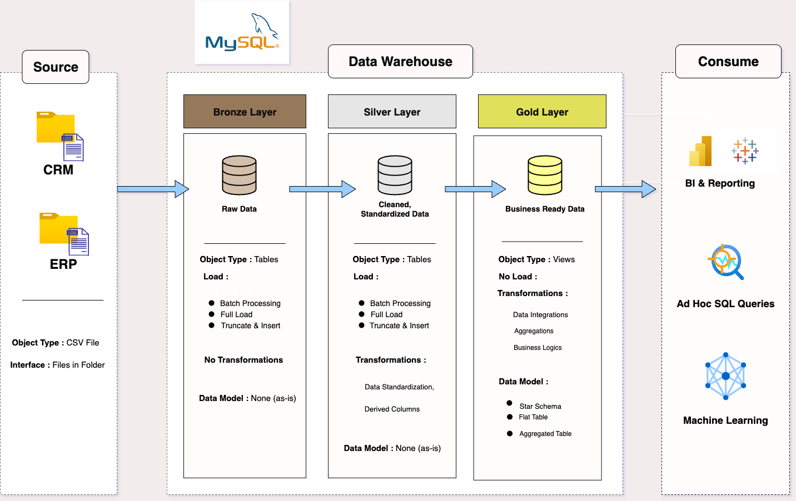

Projects

SQL Data Warehouse
Designed a modern data warehouse using MySQL. Developed ETL pipelines, created fact & dimension tables, and generated analytical SQL reports.
View on GitHub
Exploratory Data Analysis
This project focuses on exploring a relational dataset using MySQL. I performed EDA through SQL queries to analyze data distributions, detect nulls, identify outliers, and uncover relationships between tables using joins, groupings, and aggregations. The goal was to gain meaningful insights and prepare the data for reporting and dashboarding.
UnderProgress